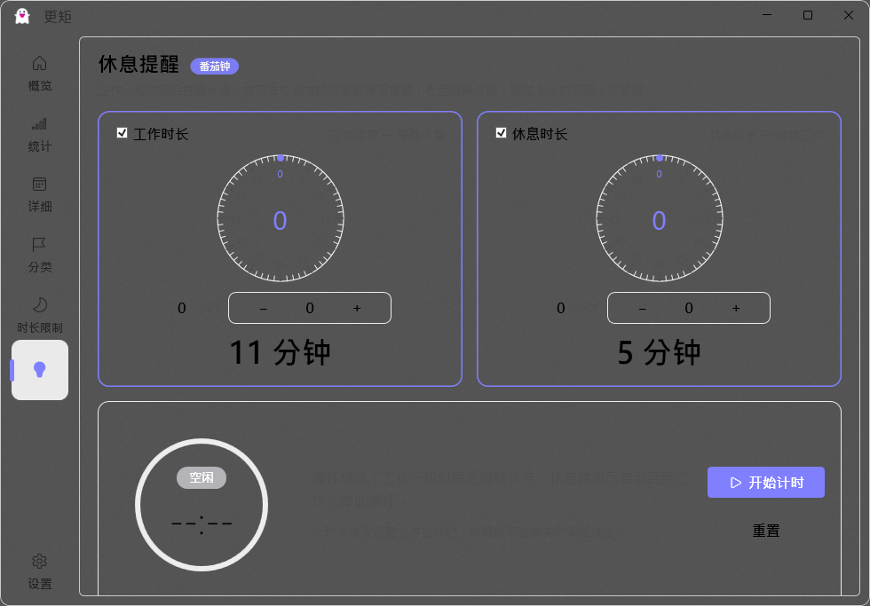
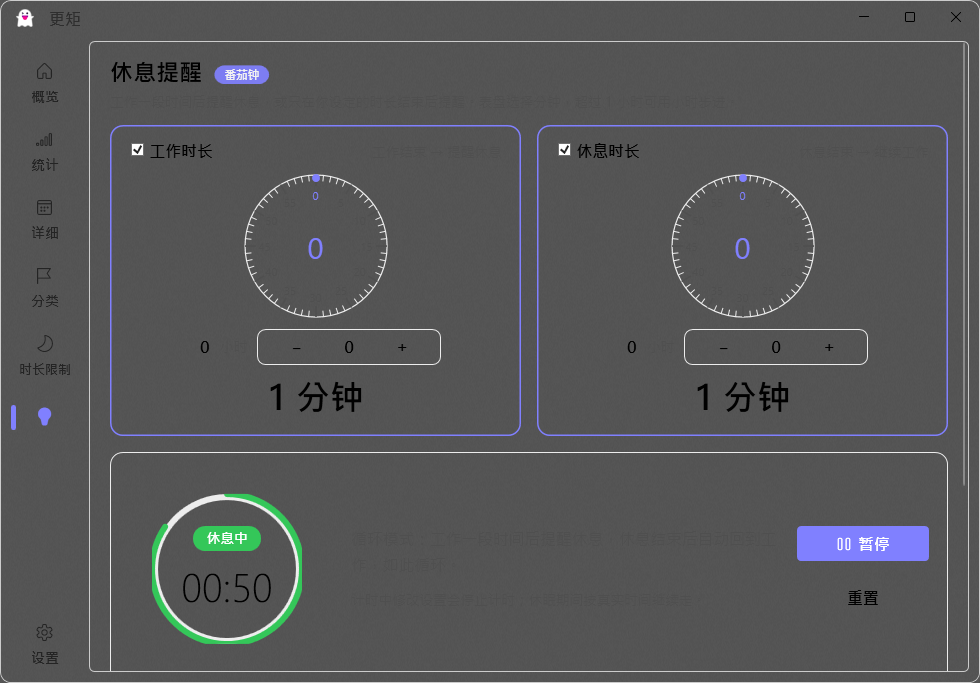
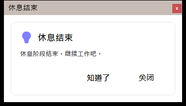
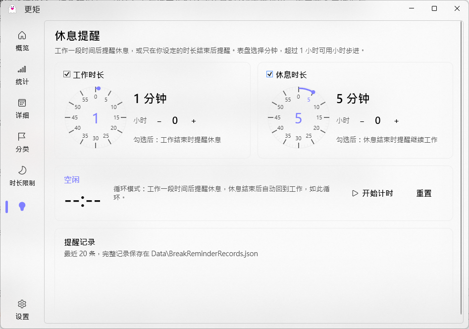
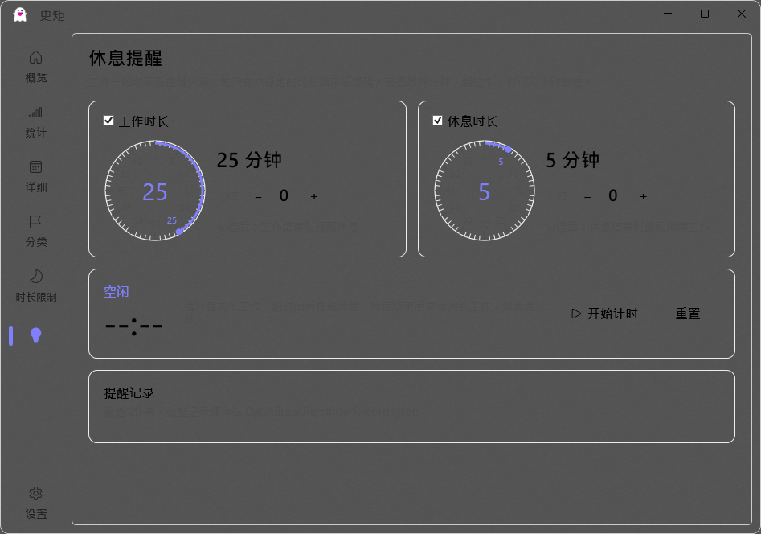
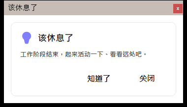

在保留原有统计/限制功能与全部页面不变的前提下，左侧导航栏新增「休息提醒」Tab：表盘式时长选择 + 工作/休息循环计时 + 系统提醒 + 配置与台账持久化；v2 完成界面 UI 优化（与整体风格统一 + 苹果风格动画）。本文档汇总功能说明、实现要点与验证结果。
Data\AppConfig.json（BreakReminder 节），提醒台账存 Data\BreakReminderRecords.json（最多 200 条），重启保留。





| 勾选 | 模式 | 行为 |
|---|---|---|
| 工作 + 休息 | 循环模式 | 工作 → 提醒"该休息了" → 自动休息 → 提醒"休息结束" → 回到工作，循环 |
| 仅工作 | 仅提醒模式 | 工作结束后提醒一次，不进入休息，计时停止 |
| 仅休息 | 仅休息模式 | 从休息阶段开始，结束后提醒一次 |
| 都不勾选 | 无法开始 | 红色提示"请至少勾选工作时长或休息时长" |
完整说明见 使用说明-休息提醒.md。
| 用例 | 结果 |
|---|---|
| 双勾选开始→Work；工作完成→Break；休息完成→回 Work（循环） | ✅ 通过 |
| 仅工作模式完成后→Idle；仅休息模式从 Break 开始 | ✅ 通过 |
| 都未勾选→抛 InvalidOperationException | ✅ 通过 |
| 暂停冻结剩余时间 / 继续恢复递减 | ✅ 通过 |
| 休眠期间不完成阶段；唤醒后补完成并标记休眠到期 | ✅ 通过 |
| 台账持久化（Start/Complete/Pause/Resume/Sleep/WakeElapsed） | ✅ 通过 |
| 0/负数时长兜底为 1 分钟 | ✅ 通过 |
合计 29/29 断言通过（测试台 .cluster/break-reminder-tmp/tests/BreakReminderCoreTest.cs，临时工程未入项目源码）。
| 检查项 | 结果 |
|---|---|
| 导航出现"休息提醒"Tab，点击进入页面 | ✅ |
| 表盘渲染与点击选值（25→1 分钟，含小时组合 1 小时 1 分） | ✅ |
| 一小时以上时长设置（1 小时 25 分钟，配置 WorkMinutes=85） | ✅ |
| 开始→工作中+倒计时；暂停冻结；继续恢复 | ✅ |
| 1 分钟工作计时结束→弹窗"该休息了"+自动进入休息 | ✅ |
| 全取消勾选点开始→红色 toast"请至少勾选工作时长或休息时长" | ✅ |
| 配置持久化：重启后设置保留；台账 JSON 时间线正确 | ✅ |
| 原功能回归：首页/统计/详细/分类/时长限制/设置 6 页全部正常 | ✅ |
| 原配置数据无损（TimeLimit 4 条规则保留，仅新增 BreakReminder 节） | ✅ |
| 配置 | 产物 | 结果 |
|---|---|---|
| Debug | UI\bin\Debug\guage.exe（1,457,152 B） | ✅ 无错误 |
| Release | UI\bin\Release\guage.exe（1,340,928 B） | ✅ 无错误 |
| 文件 | 职责 |
|---|---|
Core\Servicers\Instances\BreakReminderServicer.cs | 计时引擎（1s 心跳 + 墙钟目标时间，休眠补偿，台账） |
UI\Controls\BreakReminderDial.cs | 表盘控件（自绘刻度/数字/选中弧，点击拖动选分钟） |
UI\ViewModels\BreakReminderPageVM.cs | 页面 VM（设置校验、模式、计时状态、台账展示） |
UI\Views\BreakReminderPage.xaml | 页面布局（两张表盘卡片 + 计时卡 + 记录卡） |
UI\Servicers\BreakReminderNotifierServicer.cs | 阶段完成监听：弹窗 + 托盘气泡 |
Core\Models\Config\BreakReminderModel.cs | 配置节模型 |
完整清单（新增 10 文件 + 修改 8 文件）、配置格式、构建与回滚方式见 开发交接文档.md；逐项测试记录见 回归验证清单.md。